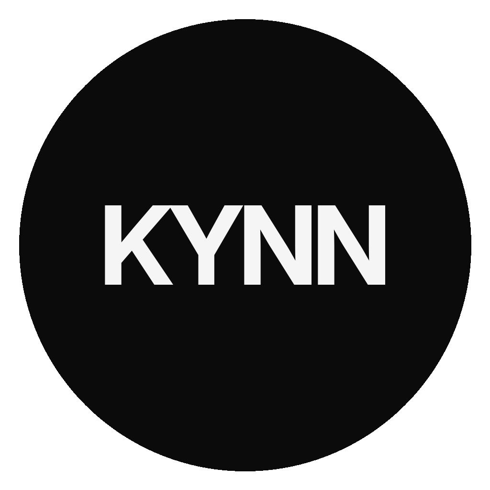

채용 안내 · 킨테크놀로지
함께할 생산 팀원을 찾습니다.
채용을 준비하고 있습니다. 3차에 걸쳐 약 10명을 순차 채용하며, 1차 모집은 약 5명입니다. 이번에는 생산 팀원만 모집합니다. 미리 보시고 관심 있으시면 연락 주세요 — 열리면 먼저 알려 드립니다.
- 지원 자격
- 생산 작업자: 신입 · 학력 무관(고졸·전문대졸·대졸)
- 급여
- 신입 첫 3개월 세전 월 2,156,880원, 이후 협의 · 경력자 면접 시 협의
- 근무
- 10:00~19:00, 주 5일
- 계약
- 계약직으로 시작, 이후 정규 전환 협의

- 모집 규모
- 총 약 10명3차 순차 채용
- 이번 모집
- 생산 팀원1차 약 5명
- 지인·지인 소개
- 2026-09-30마감이메일로 미리 연락 주세요
01
어떤 자리들인가
여섯 가지 일, 열 명회사 하나가 돌아가려면 여섯 가지 일이 필요합니다. 열 명이 그 여섯을 나눕니다. 작은 회사라 경계는 흐릿합니다 — 검사하는 분이 자재를 받기도 하고, 생산 팀원이 치구를 만들기도 합니다.
만드는 사람과 검사하는 사람은 반드시 다른 사람입니다.
| 역할 | 인원 | 하는 일 | 채용 차수 |
|---|---|---|---|
| 생산 책임자 | — | 현장 총괄. 일일 생산 계획, 작업 표준서 관리·개정, 신입 교육, 설비 1차 점검 | 1차 · 경력 필수 |
| 생산 팀원이번 모집 | 3~5 | 작업 표준서대로 가공·조립. 매일 작업일지. 익숙해지면 치구 제작·표준서 개선 제안 | 1차 |
| 검사·품질 | — | 검사 기준서 관리, 최종 검사, 검사 성적서, 계측기 관리, 불량 원인 분석 | 1차 · 경력 우대 |
| 자재·구매·출하 | — | 자재 발주, 입고 검수, 재고 관리, 포장·출하, 거래명세서 | — |
| 사무·관리 | — | 서류, 세금계산서, 작업일지 취합, 급여·4대보험 보조, 거래처 응대 보조 | — |
| R&D | — | — | 경력 우대 |
| 대표 | — | 영업·거래처·경영·품질 최종 책임 | — |
다른 자리에 관심이 있으신 분도 미리 보시고 이메일로 연락 주세요 — 열리면 먼저 알려 드립니다.
02
함께할 사람
경력보다 꼼꼼함과 정직함경력보다 꼼꼼함과 정직함을 봅니다. 초기 회사라 완성된 자리가 아니라 같이 만드는 자리입니다 — 처음이라고 겁을 내실 필요는 없습니다. 배우면 시작할 수 있다고 믿습니다.
다만 일을 잘하는 건 다른 문제입니다. 그 차이가 꼼꼼함, 성실함 그리고 간절함이며, 저희는 그 차이에 값을 매기는 회사입니다.
처음 하시는 분들은 낯설고 어렵고 손에 익지 않을 수 있습니다. 그래도 진심을 다해 배우고 간절한 마음으로 한다면 불가능한 것은 없다고 믿습니다.
이런 분을 기다립니다
- 도면을 읽을 줄 알거나 배울 의지가 있는 분
- 손으로 하는 일이 싫지 않은 분
- 숫자와 치수에서 실수를 잘 잡아내는 분 — 완벽주의에 가까운 꼼꼼함을 우대합니다
- 말한 것을 지키고, 기록을 남기는 게 어렵지 않은 분
- 모르는 것을 모른다고 말할 수 있는 분
- 꾸준하고 성실하신 분
- AI·엑셀 활용에 어려움이 없는 분
- 우대반도체 장비 제조 현장 경험이 있는 분, 공대 학위 소지자(기계공학·전자공학 등), 운전면허 소지자, 자동화·스마트팩토리·AI Native Factory에 관심이 있는 분
03
솔직히, 이런 분께는 맞지 않습니다
성향 차이일 뿐, 누구의 문제도 아닙니다규모와 네임밸류가 중요하시다면 킨테크놀로지와는 맞지 않을 것입니다. 굉장히 초기이며 도전적이기 때문입니다.
- 갖춰진 시스템과 안정된 조직을 원하시는 분 — 킨테크놀로지는 지금 그걸 만드는 중입니다.
- “대충 빨리”가 편하신 분 — 표준서대로 만들고 기준서대로 아주 꼼꼼하게 검사하는 원칙과 부딪히게 됩니다.
- 명함에 큰 회사 이름이 필요하신 분 — 저희 회사는 아직 아무도 모르고 작습니다.
- 지금 당장의 급여가 중요하신 분 — 지금은 급여가 높지 않습니다. 신입은 처음 3개월 최저임금 기준, 경력자는 협의입니다. 회사가 벌기 시작하고 성과를 내 주시면 급여는 당연히 올라가겠지만, 그때까지 기다리기 어려운 분께는 맞지 않습니다.
이건 그 누구의 문제가 아닌 성향 차이이며, 단지 다를 뿐입니다.
04
얻는 것 · 솔직하게 말씀드릴 것
있는 그대로여기서 얻는 것
- 일의 전체를 봅니다. 큰 공장에서는 한 공정만 맡지만, 여기서는 도면이 들어와서 돈이 들어오기까지 전 과정을 봅니다. 나중에 어디를 가든, 뭘 하든 남는 경험이고 공부입니다.
- 바꾼 것이 바로 남습니다. 더 나은 방법을 찾으면 그날 표준서를 고칩니다. 그 방법이 회사의 표준, 그리고 문화가 됩니다.
- 회사가 크면 같이 큽니다.
솔직하게 말씀드릴 것
- 지금은 작습니다. 직원 수도, 사무실도.
- 체계가 아직 다 갖춰지지 않았습니다. 만들어 가는 걸 재미있어하는 분이면 맞고, 잘 짜인 곳에서 배우고 싶은 분이면 맞지 않습니다.
- 이 회사를 평생 키워 갈 생각이라 사람을 자주 바꾸고 싶지 않습니다. 신중하게 동료분을 뽑을 예정입니다.
- 초기인지라 워라밸을 기대하기는 어렵습니다. 납기가 겹치는 주에는 야근이 있을 수 있습니다.
05
근무 규정
10:00~19:00 · 주 5일- 근무시간
- 10:00~19:00, 주 5일 납기 주간에 연장할 때는 사전에 안내하고 수당을 지급합니다.
- 사내 소통
- 구글 워크스페이스
- 기록·문서
- 노션, 구글 드라이브
- 거래처·공급사 소통
- 이메일
- 작업일지
- 퇴근 전 폼으로 제출 특이사항이 없어도 반드시 제출합니다.
- 원칙
- 작업 표준서 및 도면대로 작업, 검사 기준서대로 검사 후 출하
06
지원 자격과 근무 조건
신입 · 학력 무관지원 자격
- 생산 작업자: 신입 · 학력 무관(고졸·전문대졸·대졸)
- 생산 담당자·검사·설비·자재·사무: 관련 경력
- 남성의 경우 군필 또는 면제 대상자
우대사항
- 제조 현장 경험, 도면 읽기
- 공대 학위 소지자(기계공학·전자공학 등)
- AI·엑셀 활용 가능
- 운전면허, 인근 거주
근무 조건
- 급여
- 신입: 첫 3개월 세전 월 2,156,880원, 이후 협의 경력자: 면접 시 협의
- 계약
- 계약직으로 시작, 이후 정규 전환 협의 계약직으로 시작하는 이유는 이 일이 본인에게 맞는지, 그리고 대표와 회사가 본인과 맞는지 서로 확인하는 시간을 갖기 위해서입니다. 그게 서로에게 도움이 되는 방향이라고 생각합니다.
전형 방법
-
연락아래 이메일로 연락 주세요
-
대화약 30분~1시간
-
회신최대한 빠르게 연락드립니다
07
지원·문의
이메일로 받습니다문의
조건이든 회사 상황이든, 지원 전에 뭐든 물어보셔도 됩니다. 있는 그대로 답하겠습니다.
지원 방법 · 제출 서류
- 제출 서류
- 지인 소개로 오신 분은 이력서 1부(자유 양식)를 이메일로 보내 주세요.
- 이메일 제목
채용공고_킨테크놀로지_포지션_이름 ○○○ 지인○○○에는 소개해 주신 분 이름을 적어 주세요.